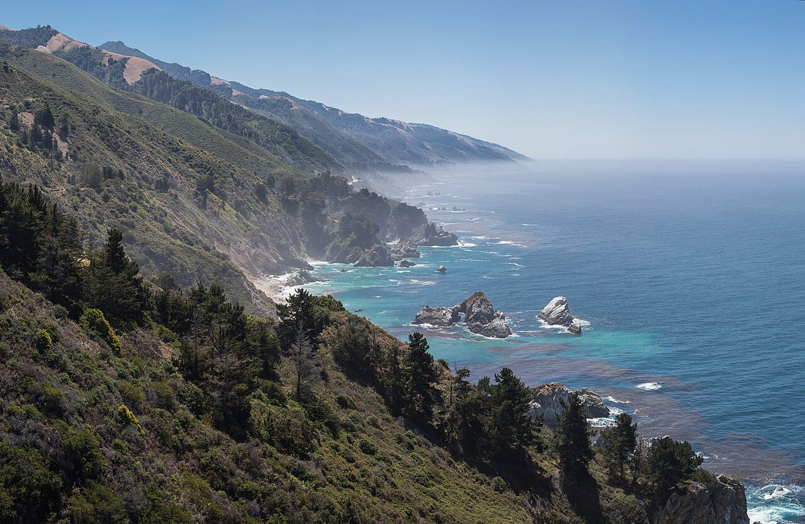

フーモリ
カフェ / 宮崎県西臼杵郡高千穂町
宮崎県西臼杵郡高千穂町にあるカフェ「フーモリ」のご案内ページです。営業時間やメニューなど、詳しいことは準備中。まずは電話かInstagramで。
制作側の連想
「フー」と吹く音から、かざぐるま
屋号の由来は分かりません。制作側は「フー」という響きから、息を吹きかけて回すかざぐるまを連想しました。四枚の羽は「フ・ー・モ・リ」の四文字に重ねています。お店の理念や由来とは無関係の、制作側だけの連想です。
四枚の羽
四文字を、景色に見立てる。
文字の形を写真に見立てた連想遊びです。写真はお店や高千穂町のものではなく、国外・撮影地不明のフリー素材です。
- フ

国外のイメージ(米国) 曲がって続く線
- ー

国外のイメージ(タークス・カイコス諸島) ひとすじの水平線
- モ

国外のイメージ(スウェーデン) 平行に並ぶ横線
- リ

国外のイメージ(オランダ) すっと立つ二本の縦線
ご案内
お店のこと(確認できたものだけ)
| 所在地 | 〒882-1101 宮崎県西臼杵郡高千穂町三田井19 |
|---|---|
| 電話 | 070-9293-4084 |
| 営業時間 | 準備中 |
| 定休日 | 準備中 |
| ご予約 | 準備中 |
| 駐車場 | 準備中 |
| SNS | Instagram @huumori__cafe |